Data Structures and Algorithms
with Object-Oriented Design Patterns in Java
Data Structures and Algorithms
with Object-Oriented Design Patterns in JavaIn this section we consider the problem of finding the largest element of an array. That is, given an array of n non-negative integers, 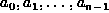, we wish to find
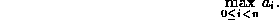
The straightforward way of solving this problem is to perform a
linear search of the array.
The linear search algorithm is given in Program  and the running times for the various statements are given
in Table .
and the running times for the various statements are given
in Table .
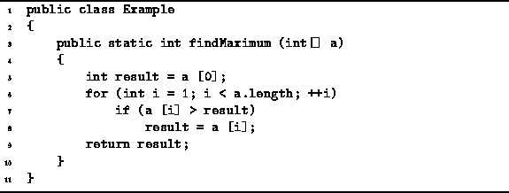
Program: Linear search to find 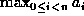.
| statement | time |
| 5 | |
| 6a | |
| 6b | 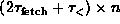 |
| 6c | 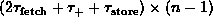 |
| 7 | 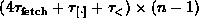 |
| 8 | 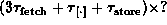 |
| 9 |
With the exception of line 8,
the running times follow simply from Axioms , and .
In particular, note that the body of the loop
is executed n-1 times.
This means that the conditional test on line 7 is executed n-1 times.
However, the number of times line 8 is executed depends on
the data in the array and not just n.
If we consider that in each iteration of the loop body,
the variable result contains the largest array element seen so far,
then line 8 will be executed in the  iteration of the loop
only if satisfies the following
iteration of the loop
only if satisfies the following
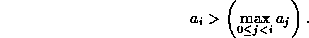
Thus, the running time of Program , 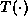,
is a function not only of the number of elements in the array, n,
but also of the actual array values, .
Summing the entries in Table we get
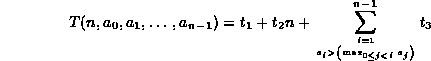
where
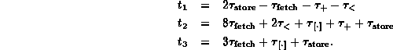
While this result may be correct, it is not terribly useful. In order to determine the running time of the program we need to know the number of elements in the array, n, and we need to know the values of the elements in the array, . Even if we know these data, it turns out that in order to compute the running time of the algorithm, 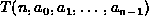, we actually have to solve the original problem!
 Copyright © 1998 by Bruno R. Preiss, P.Eng. All rights reserved.
Copyright © 1998 by Bruno R. Preiss, P.Eng. All rights reserved.